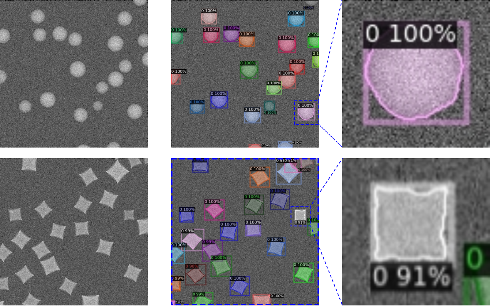
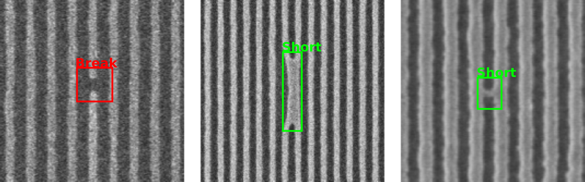
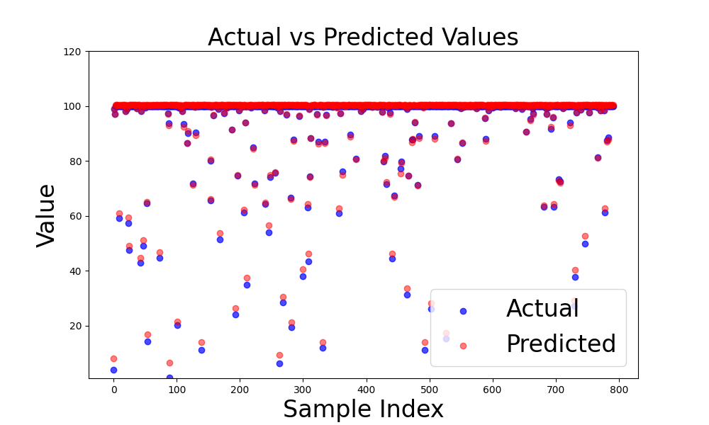

About Me
I am a researcher specializing in AI, machine learning, and data analysis. My work focuses on developing intelligent systems for advanced manufacturing & computation.
Research Interests
- Deep Learning: feature recognition, AI-guided image analysis
- Integrated Data Monitoring: extraction, correlation, sophistication and prediction
- Smart Manufacturing: digital twin & data integration
- Reinforcement Learning: process refinement
Projects
- Project 1: AI-Guided Imaging Metrology: Detection, Segmentation and Measurements [More Info]
- YOLOv8: Detection & Segementation  
- Project 2: Machine Learning for Data Integration and Smart Manufacturing [More Info]
- Denoising
- AI-guided feature extraction
- Project 3: Smart Mufacturing & Prediction [More Info]
-

The input-output relationship is a critical concept in engineering, research and manufacturing. Integrating and predicting the
Selected Publications
- Hanlei Zhang, Jincheng Bai, Xiabo Chen, Can Li, Chuanjian Zhong, Jiye Fang and Guangwen Zhou (2024). Deep-Learning Recognition of Scanning Transmission Electron Microscopy: Quantifying and Mitigating the Influence of Gaussian Noises. arXiv preprint arXiv:2409.16637 [Link]
- Hanlei Zhang, Jincheng Bai, Xiabo Chen, Can Li, Chuanjian Zhong, Jiye Fang and Guangwen Zhou (2024). Deep-Learning Recognition of Scanning Transmission Electron Microscopy: Quantifying and Mitigating the Influence of Gaussian Noises. arXiv preprint arXiv:2409.16637 [Link]